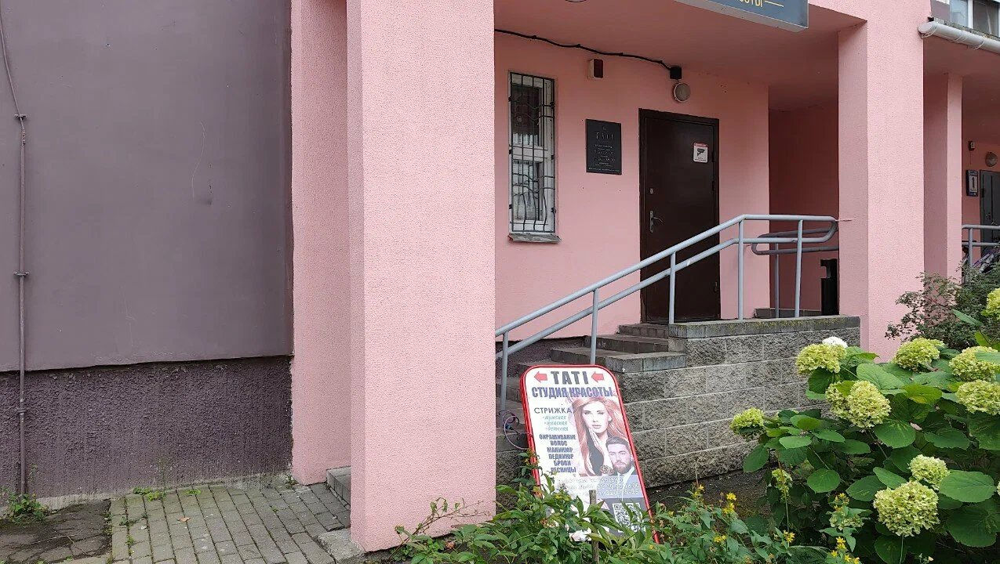

Тати студио: красота для всей семьи
Стрижки для мужчин, женщин и детей, окрашивание и уход за волосами, маникюр и педикюр. Тёплая студия на Гурского, рядом с метро Михалово, где вас встречают без спешки и подбирают то, что подойдёт именно вам.
Студия, в которую хочется возвращаться
Тати студио это не просто место, где подстригут или сделают маникюр.
Здесь можно прийти всей семьёй: папа к мастеру на мужскую стрижку, мама на окрашивание или маникюр, а ребёнка постригут спокойно и без слёз. Гости в отзывах пишут, что ходят сюда по несколько лет, приводят мужей и детей, а мастерам доверяют свои волосы и ногти.
Мы работаем так, чтобы после визита вам хотелось не просто посмотреть в зеркало, а ещё и записаться снова. Для этого мастера выслушивают пожелания, честно говорят, что получится, а что лучше не делать, и подбирают решение под ваш образ жизни, тип волос и характер.

Что говорят о нас
Рейтинг и отзывы с Яндекс Карт, 64 отзыва.
Гости рассказывают, что ходят в студию больше трёх лет и считают, что плохих специалистов здесь нет.
по отзывам на Яндекс КартахПостоянные клиенты пишут, что стригутся здесь всей семьёй, вместе с мужем и детьми.
по отзывам на Яндекс КартахОтдельно хвалят атмосферу: уютно, светло, мастера приветливы, а результат нравится.
по отзывам на Яндекс КартахЧем мы занимаемся
Парикмахерские услуги и ногтевой сервис в одном месте.
Стрижки
Женские креативные и модельные стрижки, стрижка одним срезом, мужские и детские стрижки. Есть льготная стрижка для отдельных категорий гостей.
Окрашивание и уход
Окрашивание, мелирование, тонирование, омбре, колорирование. Лечение и уходовые процедуры для волос, кератиновое выпрямление.
Маникюр и педикюр
Женский, мужской и детский маникюр, аппаратный и комби, дизайн ногтей, spa-маникюр. Педикюр, в том числе smart-педикюр.
Укладки и причёски
Повседневные и вечерние укладки, свадебные причёски, локоны, гофре, французские косички.
Процедуры для волос
Экранирование, глазирование, декапирование, парафинотерапия для рук. Диагностика состояния волос перед процедурой.
Для всей семьи
Мужчины, женщины, дети: все услуги в одном месте, а по времени для нескольких человек можно договориться при записи.
Как проходит визит
Всё просто и без неожиданностей.
Запись
Позвоните или напишите в мессенджер. Подберём время и мастера.
Разговор
Мастер выслушает пожелания и подскажет, что подойдёт вам по типу волос или ногтей.
Работа
Спокойная атмосфера, внимание к деталям, без суеты.
Результат
Вы смотрите в зеркало и решаете, нравится ли. Если что-то не так, скажите об этом мастеру.
Удобно добраться и приехать
Студия находится на улице Гурского, 44, корпус 3, в 580 метрах от метро Михалово. Рядом остановки общественного транспорта, а для тех, кто приезжает на машине, есть парковка.
Оплатить можно картой или наличными. В студии есть Wi-Fi и туалет, так что ожидание окрашивания или процедуры пройдёт комфортно.
Запишитесь на удобное время
Позвоните или напишите в WhatsApp, Viber или Instagram. Подскажем по услугам, подберём время и мастера, а если не уверены, что именно нужно, поможем разобраться.